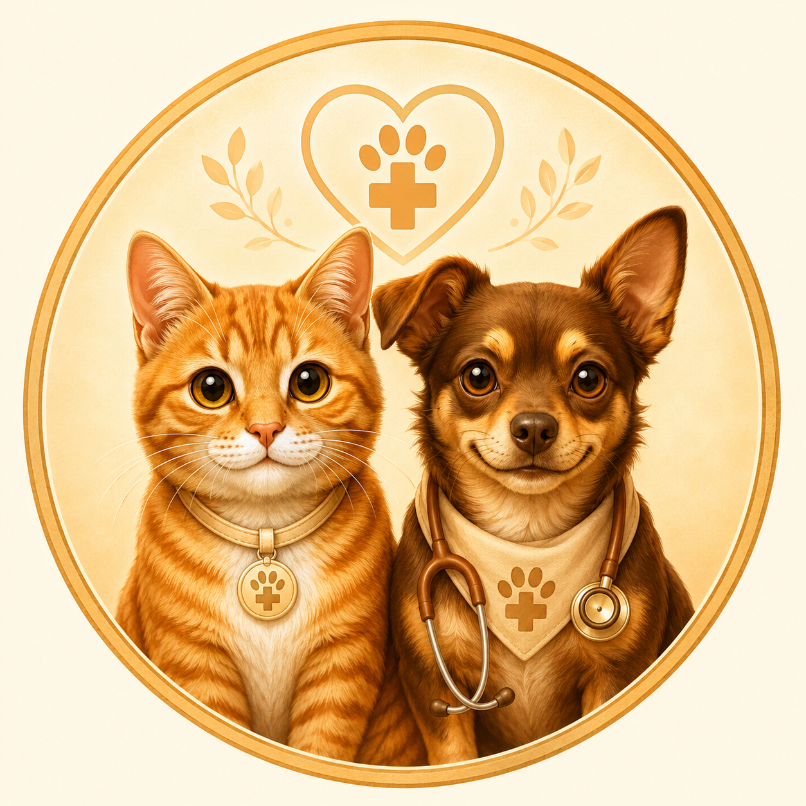
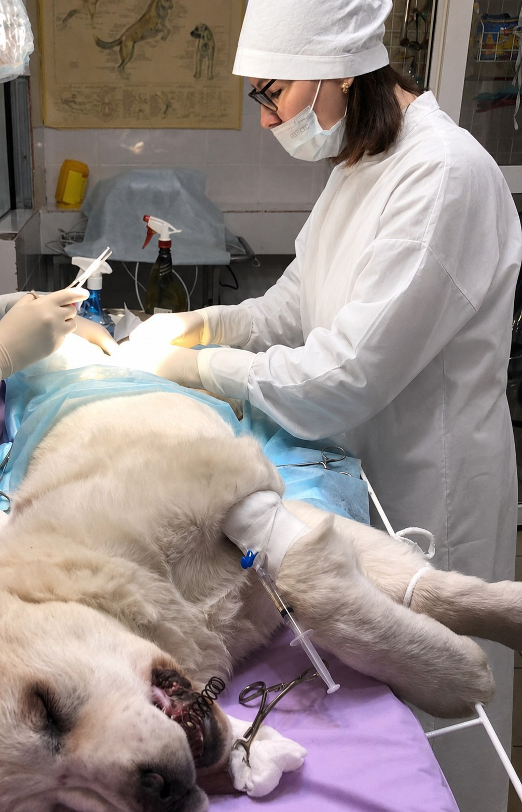
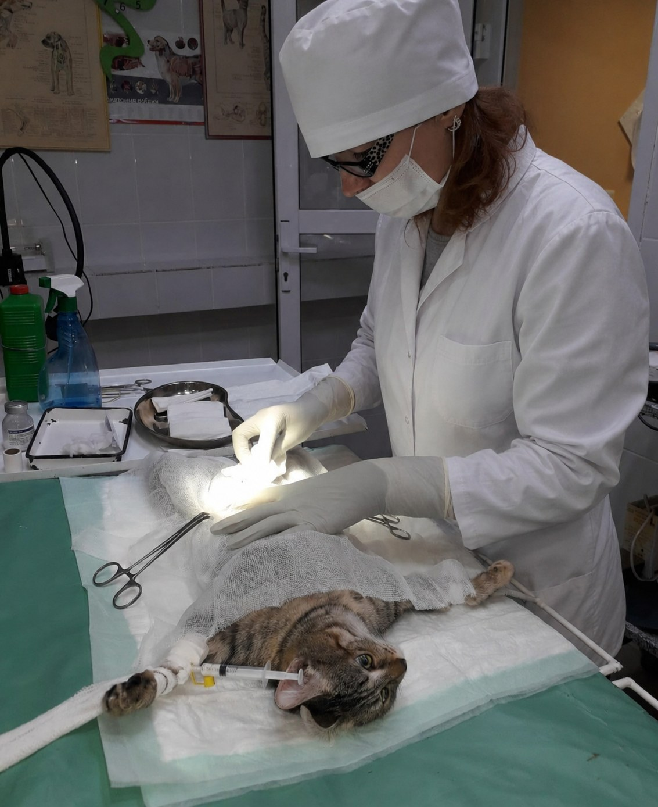

Вызов ветеринарного врача на дом
Для планового осмотра, базовой помощи, лечебных процедур и консультации по состоянию кошки или собаки.

Доктор Е.Плановая помощь кошкам и собакам
Федорова Елена Ивановна. Более 30 лет практики. Плановая помощь кошкам и собакам на дому и онлайн-консультации.
Спокойно объясняю ситуацию, согласовываю действия и помогаю владельцам понять, какой формат помощи нужен питомцу.
Подход
Форматы помощи
Для планового осмотра, базовой помощи, лечебных процедур и консультации по состоянию кошки или собаки.
Подходит, чтобы обсудить состояние питомца, задать вопрос, уточнить дальнейшие действия и понять, нужен ли очный осмотр. Онлайн-консультация не заменяет очный осмотр.
Услуги
Сложные операции, которые требуют полноценной операционной, наркозного контроля и специального оборудования, на дому не проводятся. В таких случаях врач подскажет, куда лучше обратиться.
Маршрутизация
Животные
Доктор Е. работает только с кошками и собаками. Для других видов животных требуется узкий специалист.
О враче
Федорова Елена Ивановна — ветеринарный врач с опытом более 30 лет. Все эти годы она помогает владельцам домашних животных в Тобольске. Сейчас ведёт частную практику: выезжает на дом и консультирует владельцев онлайн.
В работе делает акцент на спокойном осмотре, понятных объяснениях и честных рекомендациях без лишних назначений.
Подробнее о враче

Отзывы
Владельцы отмечают внимательное отношение, понятные рекомендации и спокойное сопровождение после процедур.
Смотреть все отзывыВремя приёма
Красным отмечены дни приёма с 10:00 до 18:00. Жёлтым — неприёмные дни. Перед обращением рекомендуем уточнить доступность в удобном канале связи.
Стоимость
Стоимость вызова зависит от ситуации, объёма помощи, района вызова и необходимых препаратов. Перед началом процедур врач объясняет стоимость и согласовывает действия.
Связь
Сообщения в Telegram иногда могут приходить с задержкой. В VK пишите в сообщения группы.
География
Выезд осуществляется по Тобольску. Врач выезжает с 8-го микрорайона.
Яндекс.КартаТобольск, 8-й микрорайонОткрыть ориентир выезда